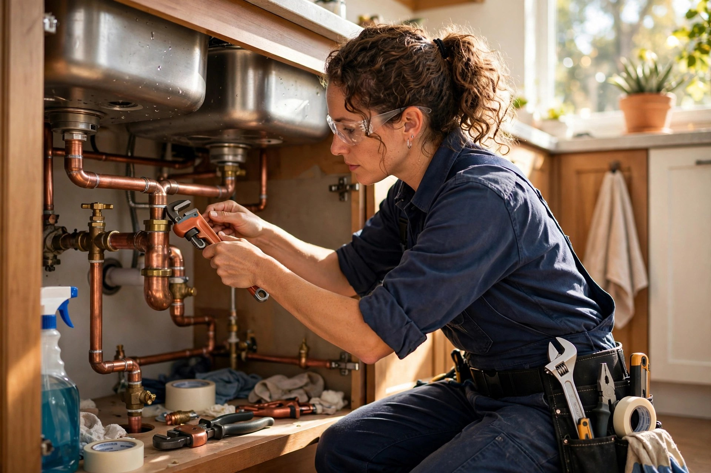
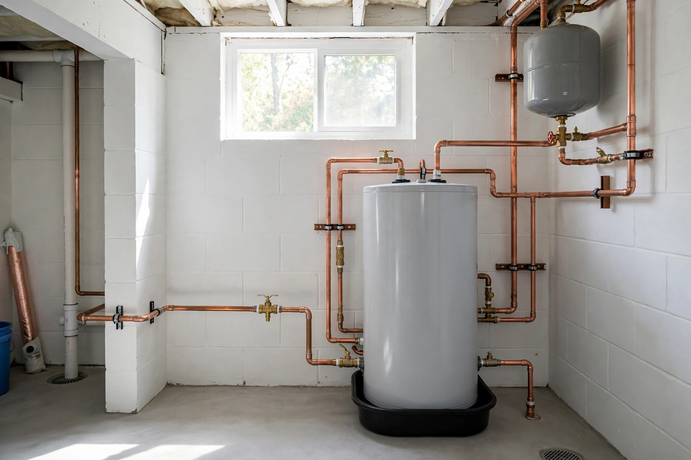
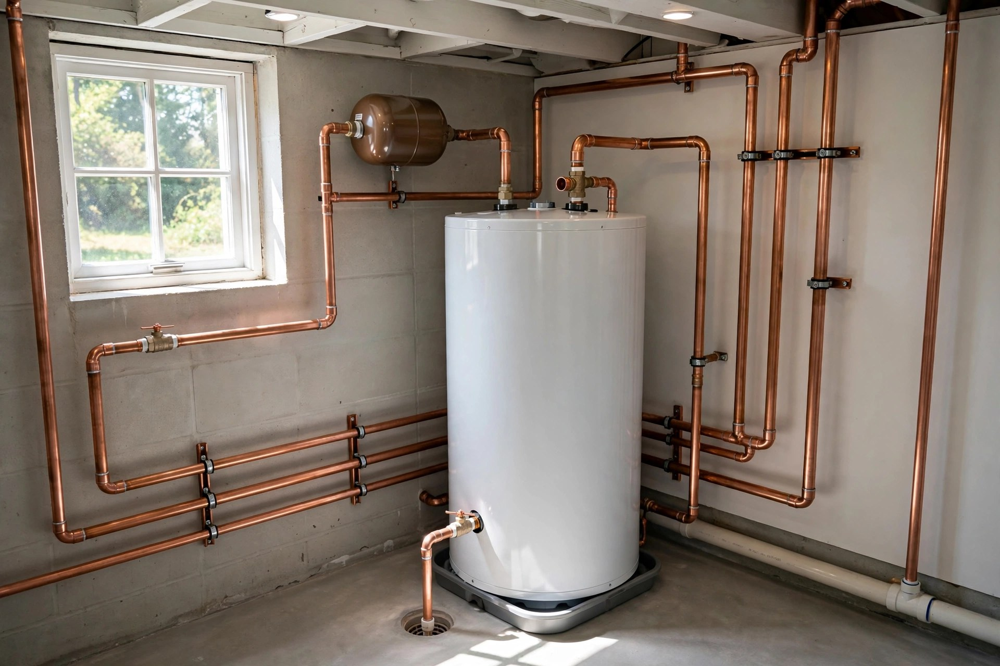

Plomberie résidentielle
Fuites, robinets, toilettes, drains et rénovations de salle de bain dans toute la maison.

Sorel-Tracy, Québec · Plomberie résidentielle et commerciale
De la petite fuite au chantier commercial : réparation, installation sanitaire et chauffe-eau — un travail propre, expliqué clairement, au juste prix.
Ce que nous faisons
Fuites, robinets, toilettes, drains et rénovations de salle de bain dans toute la maison.
Entretien et installations pour commerces, bureaux et immeubles — interventions planifiées.
Diagnostic de fuites, débouchage, réparation de tuyauterie et entretien préventif.
Pose de toilettes, lavabos, éviers et robinetterie — propre et aux normes.
Installation et remplacement de chauffe-eau — eau chaude fiable, sans surprise.
Fuite majeure, tuyau éclaté, dégât d'eau : appelez — on intervient rapidement.
Pourquoi nous choisir
On croit aux choses simples : un diagnostic juste, un prix expliqué d'avance et un chantier laissé propre. Vous savez exactement ce qui est fait — et pourquoi.
Notre travail


Passez nous voir
Bon à savoir
Oui — on évalue le travail et on confirme le prix avant de commencer. Aucune surprise sur la facture.
Fermez l'arrivée d'eau si possible, puis appelez-nous au (450) 742-0114 — on intervient rapidement pour les fuites et dégâts d'eau.
Oui — résidentiel et commercial : entretien, réparations et installations pour commerces, bureaux et immeubles.
Lundi au vendredi, de 9 h à 12 h et de 14 h à 18 h. Fermé le samedi et le dimanche.
Contactez-nous